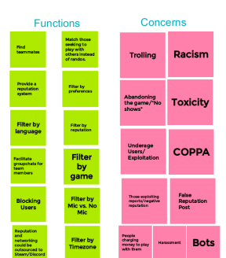
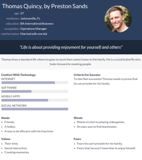
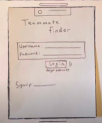
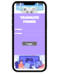

Problem Statement: Teammate Finder

Video game players, new, and seasoned alike, feel there are limited resources to facilitate connecting with like minded players. Our solution will make it accessible forvideo game users to find people to enjoy these games with, either for recreational or competitive purposes.
Affinity Diagram: Teammate Finder
My group and I came together to discuss and share are ideas on what makes up Teammate Finder.
Personnas: 4 Personnas for Teammate Finder
Four personnas of potential Teammate Finder app users.
Storyboard: Storyboards for Teammate Finder
Storyboards for potential and non potential Teammate Finder app users.
Sketches: Teammate Finder App
Multiple sketches of potential app designs for finding teammates.
Paper Prototype: Teammate Finder App
A video of a functional prototype on paper to get an idea on what the Teammate Finder App will look like.
Hi-Fi Prototype: Teammate Finder App
A high fidelity prototype of Teammate Finder.